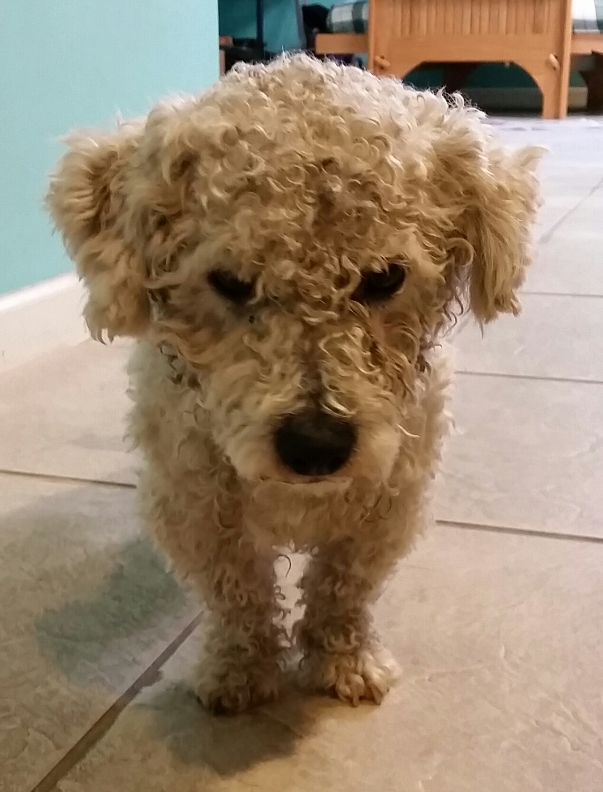
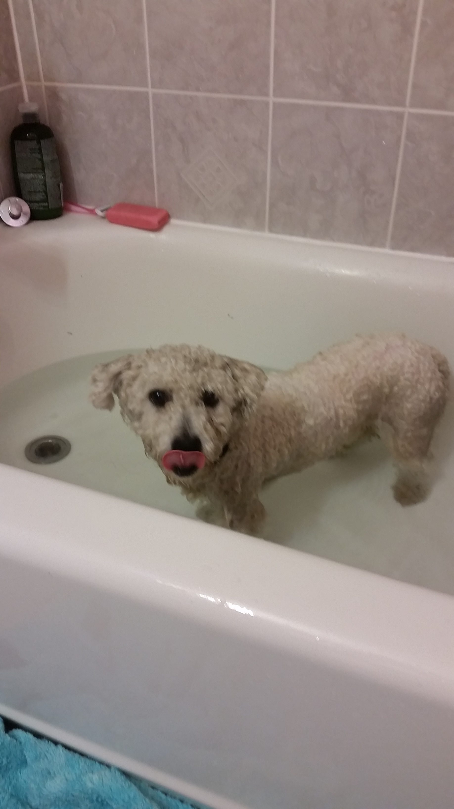
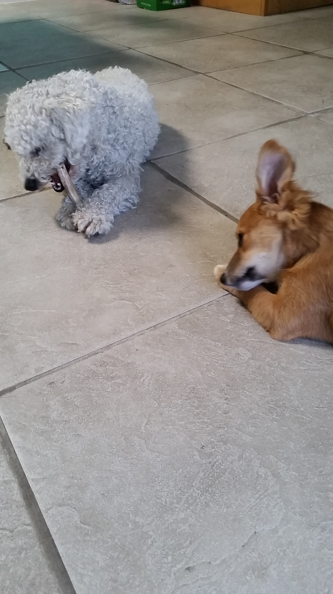
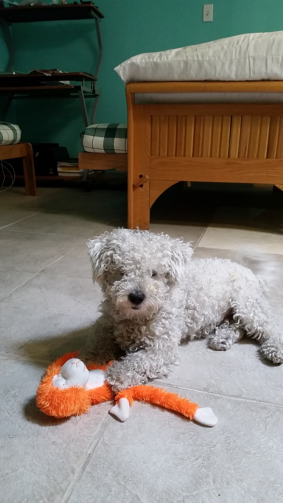
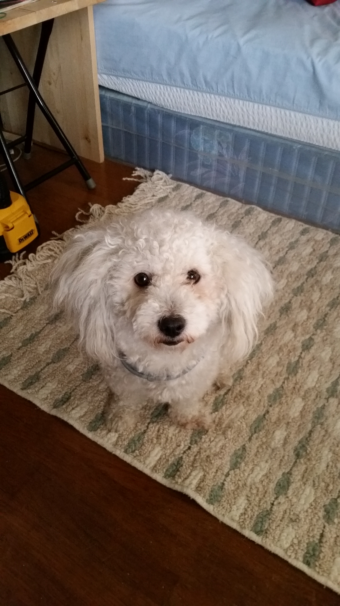
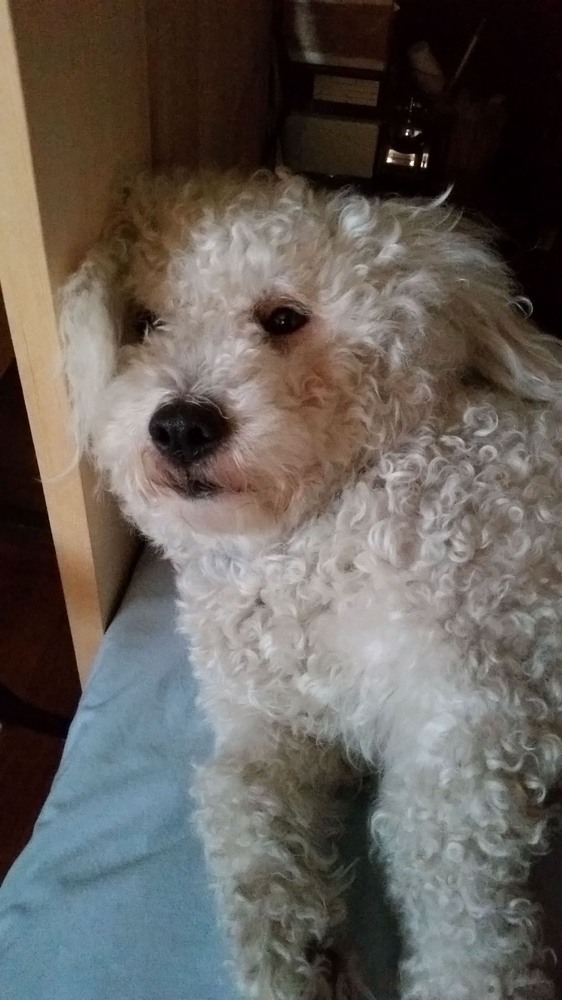
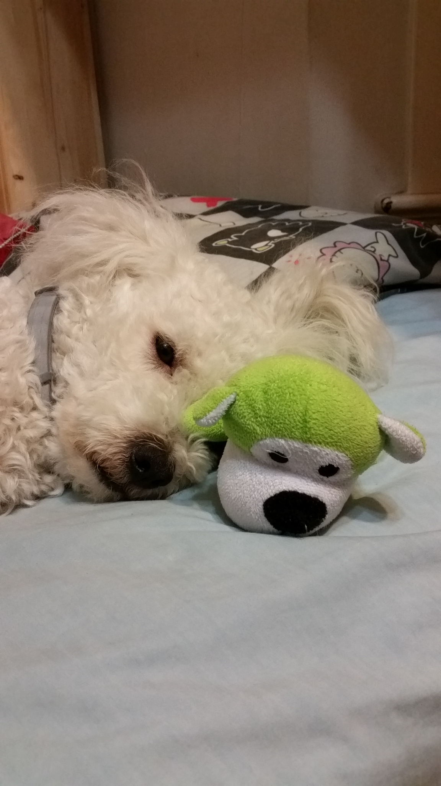
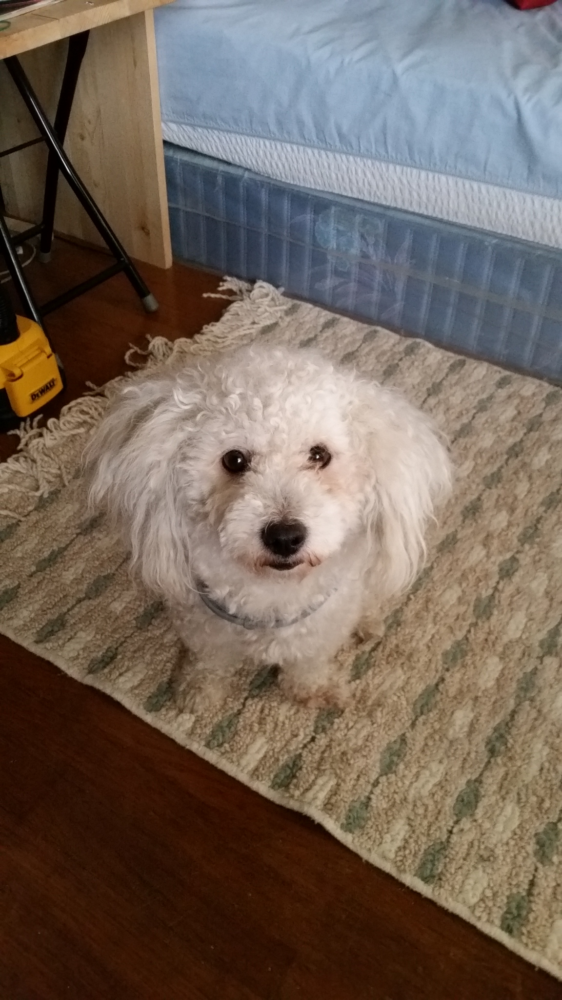
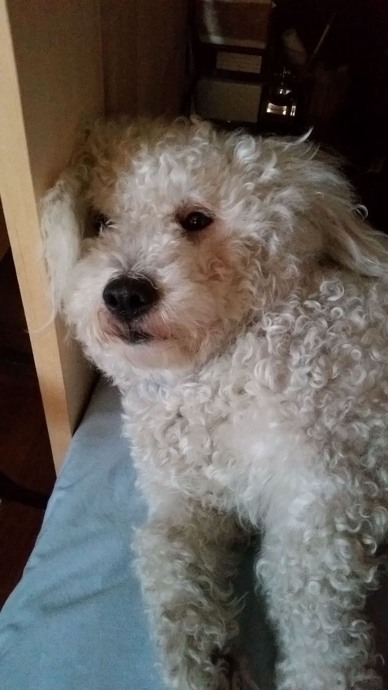
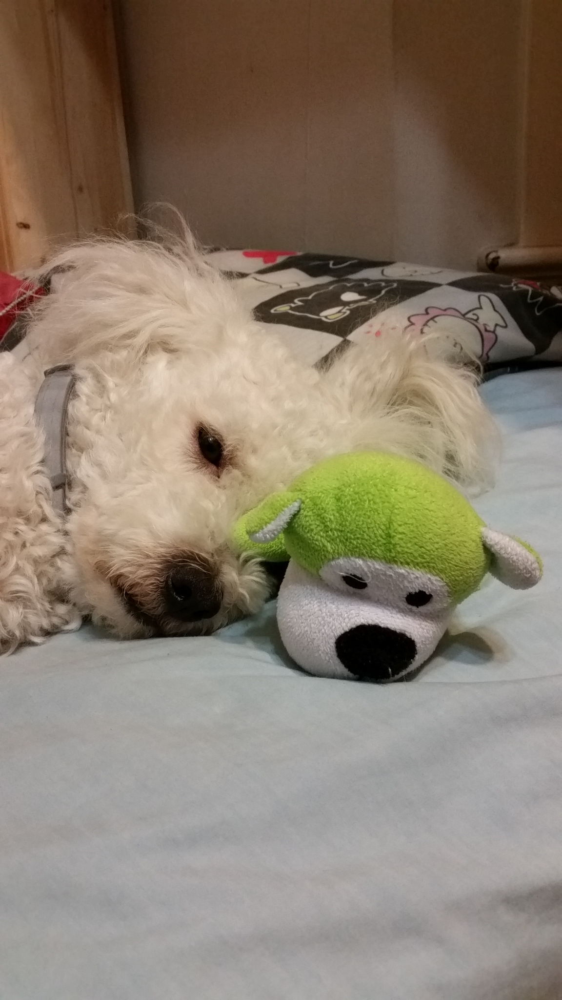

My life is happier because of Cuki.
Back in July of 2015 while I was living in Oakland, one sunny day while I was in the front yard soaking in the sun, Cuki, was a lost dog walking around, in front of my residence.
After knocking on doors to find his owner to no avail, I left my front door wide open so just in case Cuki would want to come in. He did, and quietly sat right behind me while I unknowingly washing the dishes. I bathed and fed him well that afternoon. After no one replied to the lost dog flyer I posted on nearby poles, the SPCA told me I could legally own him after sometime if no one claim Cuki.
And after two months, Cuki was officially mine and I couldn't be more happier. We've had and still having so much great time together and I wouldn't trade anything for him.
    




